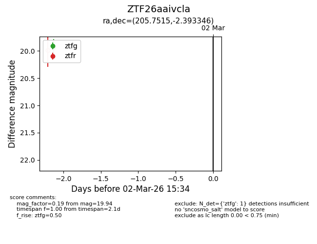
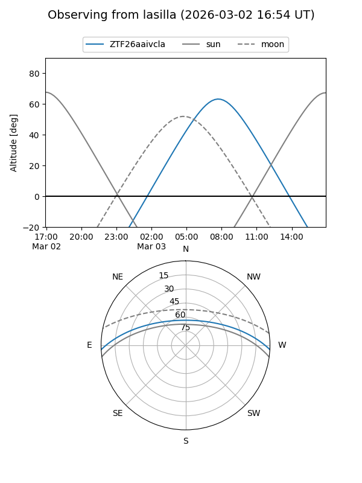
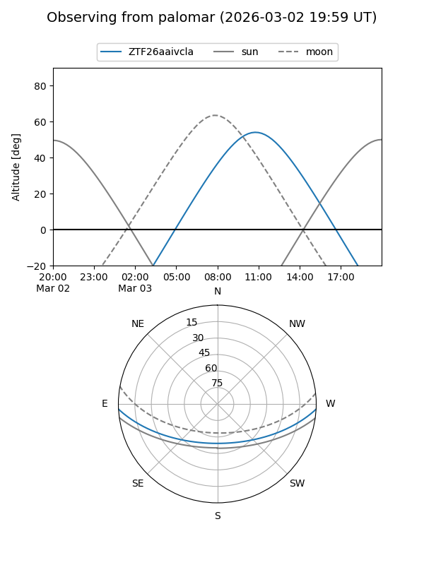
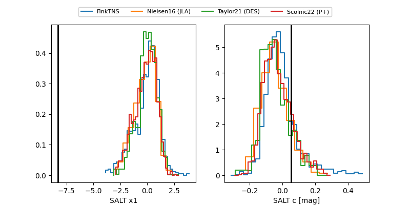

ZTF26aaivcla
Target ZTF26aaivcla at 2026-03-02 15:39
Aliases and brokers:
FINK: link
Lasair: link
ALeRCE: link
alt names
ZTF26aaivcla (ztf,fink_ztf)
Coordinates:
equatorial (ra, dec) = 205.7515,-2.39335
equatorial (HMS+DMS) = 13:43:00.35,-02:23:36.05
galactic (l, b) = (327.7851,+57.96834)
Flags:
Photometry:
last ztfg=19.94
1 ztfg detections
Lightcurve

Visibility


Additional plots
